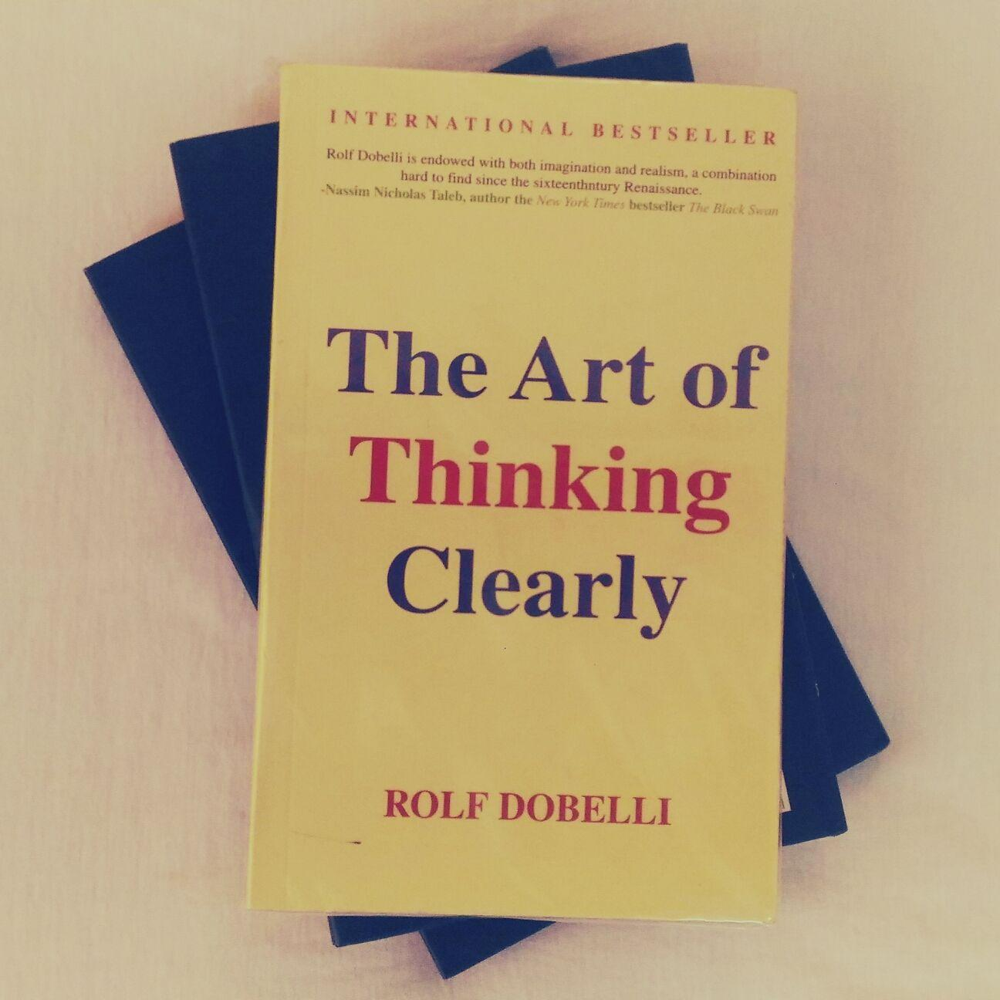

Finally, I have completed reading the book successfully . It took me almost 5 months to do so. I was talking about the book named THE ART OF THINKING CLEARLY written by ROLF DOBELLI, a famous non-fiction, international best seller.
The book contains 100 chapters, each one having the length of 2.5-3 pages. The book is about the most predictable and common human behavior written in the most interesting and engrossing way.
A common format, or can be said, a pattern is followed for every chapter. It can be sectioned into three parts. First, THE INTRODUCTION. The writer mostly starts with an example of action from our day to day life, or a question to give yourself something to think upon. Once you read the action or activities explained, you are gonna have a feeling of duja vu because that’s how you will connect yourself with the book.
After that comes the theory. THE EXPLANATION of the topic. Some facts. Actual facts, not anything fictitious. One of the amazing aspects of this book is whatever written in this book is scientifically proven. It’s not mere a hypotheses of some random guy. In these EXPLANATION part, there are lots of references from studies and experiments conducted in famous universities which make the statement more trustworthy.

Then comes the last and most effective part. I have named it THE CONCLUSION part. Like the name refers, this part contains the summary of the whole idea. It will give you an overall knowledge about the chapter. If you are a busy guy with the busiest daily work schedule and an earnest intention to read the book, just go through the conclusions of each chapter. Your job will be done!
Reading non-fictions often seems too much boring. But a reader will be able to connect with the contents with his/her daily life so nicely that this connection will gear him/her up to chase this book till the end. Besides, there are plenty of ideas, concepts and facts that seem interesting. Concepts like CONFIRMATION BIAS, BEGINNER’S LUCK, TWADDLE TENDENCY, MOTIVATION CROWDING, VOLUNTEER’S FOLLY and so on.
I do have a considerable command over English language. That’s why it took me sooooo long to finish it. But kudos to me! :D I had the intention to complete it by understanding the contexts. That’s what I will suggest to the interested readers. Just take your time, try to understand the message given by the writer. Reading this book without actually realizing the fact is a waste of time. By going through in such way, One can be able to take out the maximum essence from the book.
The Art of Thinking Clearly
Rolf Dobelli
Page: 326
**Available in both original and nilkhet print.